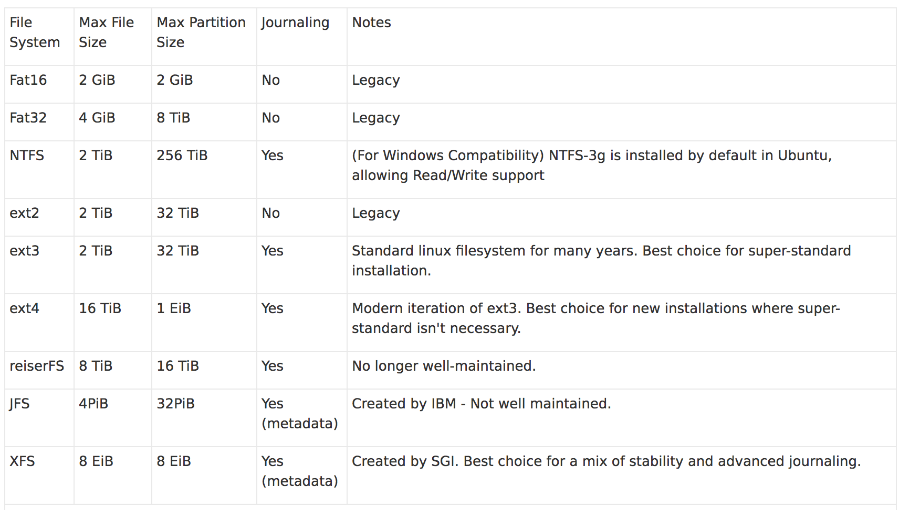

Created:2019-03-13 Last modified:2019-03-13
A disk can be paritioned into several logic units (windows 分区成C盘，D盘). Each parition (logic unit)
can be formatted into different types of file systems, such as NTFS, exFat.
When a disk is physically pluged into a PC, the PC OS/administrator needs to mount a parition into a OS existed file system's directory.
And the OS must have corresponding file system driver in order to mount it.
The recommended file system for install Linux is Ext4

Setting up /home on a separate partition is beneficial because your settings, files, and desktop will be maintained if you upgrade, (re)install Ubuntu or another distro
#df list size, avaliable size, type, mounted directory of each parition
df -hT # -h human readable, -T FS type of each parition
A disk is represented as a file under the /dev directory, it has a name like, sda, sdb, sdc ...
sda represent the disk, sda1, sda2, sda14 represents the paritions of the disk.
1). Partition Format MBR vs. GPT
MBR (Master Boot Record): an old partition format released in 1983. In MBR, the first sector is a the first stage bootloader (GRUB2 boot.img) and 4 parition entries.
It can only support a disk up to 2TB size and 4 paritions
GPT (GUID Partition Table): Each parition has a GUID
It has a BIOS boot partition to store the second stage of bootloader (e.g. GRUB2 core.img)
It has a EFI System partition to store the third stage bootloader
2). Primary partition vs. Extended partition
In MBR partition type, because it only support 4 paritions. If more partitions are expected, a primary partition will be used as a container that contains multiple partitions, which are called extended partitions.
3). Swap partition: Swap partition does not have a file system, it is purely used as swap space.
#fdisk is a tool to check, create, modify MBR paritions on a disk
#gdisk is for GPT
gdisk /dev/sdc # enter interactive mode on this disk
#mkfs is a tool to create a FS on a partition. (It is unusual to create a FS directly on a disk)
mkfs -t=vfat --verbose /dev/sdc2 # vfat is Fat32
A partition is mounted default as root and normal users do not have access right
sudo mount /dev/sdc2 /datadrive # the datadrive need root permission
sudo mount -o uid=nan,gid=nan /dev/sdc2 /datadrive # the datadrive can be accessed by nan , mount 2.31.x
sudo umount /datadrive # unmount this partition
Ubuntu use the same Debian package management. It helps install, update, remove software packages, and resolve dependencies.